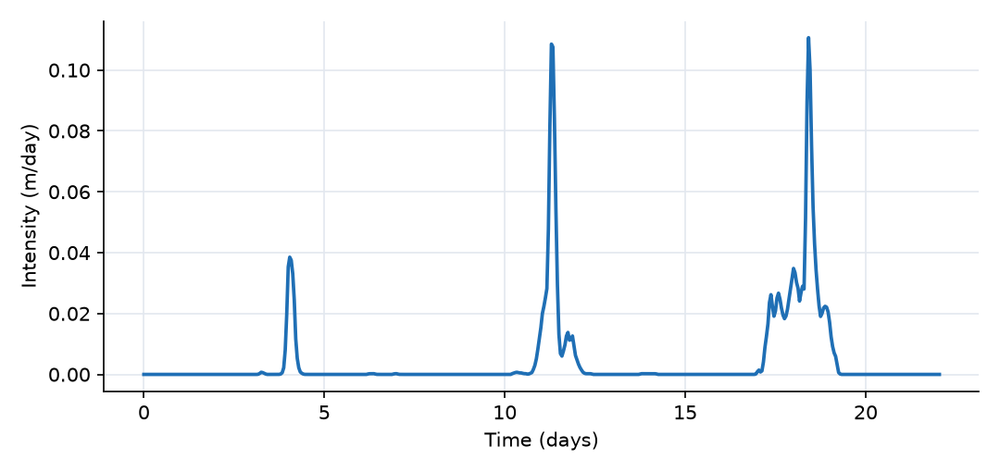
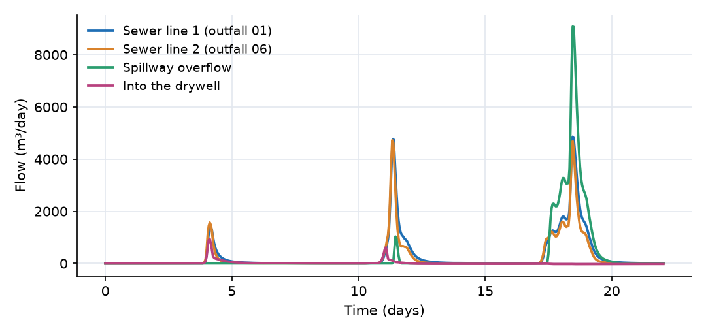
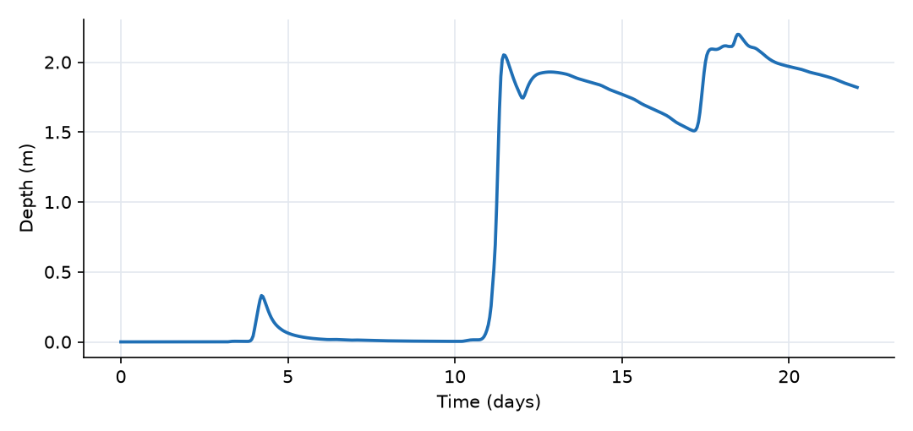
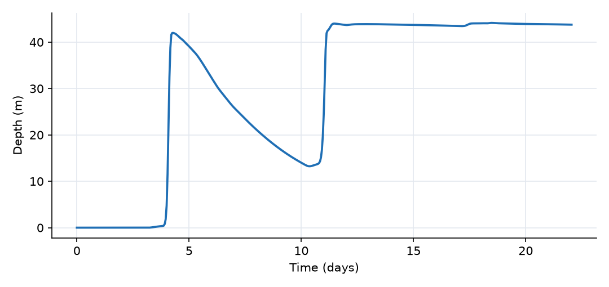
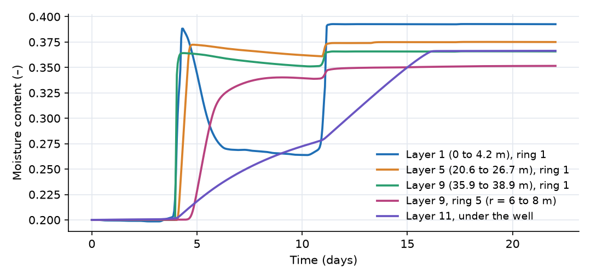
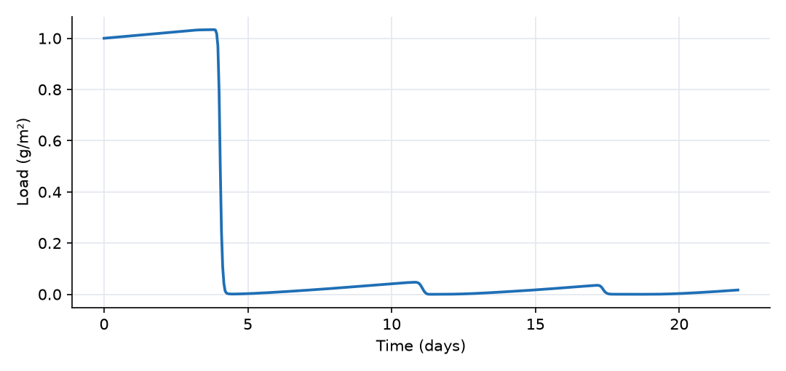
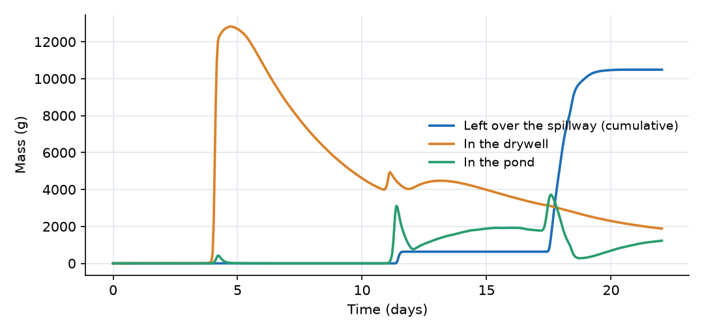

What this model represents
In arid and semi-arid cities such as Los Angeles, stormwater is increasingly treated as a resource: it is collected by the storm-sewer network and infiltrated, in place of being sent to the ocean. Where the near-surface soils are tight, drywells are used: vertical shafts, here 2 m wide and 42 m deep, that bypass the surface layers and put the water directly into deeper, more permeable strata. Their performance depends on how much water the surrounding vadose zone can accept, and their risk depends on what the water carries: the first flush of a storm washes the pollutants accumulated on streets and roofs during the dry season straight into the drywell.
This model is a complete small sewershed with such a system:
- 13 paved sub-catchments (11.3 ha) drain into two 0.91 m storm-sewer lines.
- Both lines discharge into an infiltration pond (519 m³ at its spillway crest).
- The pond drains into a 42 m drywell, infiltrates through its floor, and spills to a downstream outlet when full.
- An axisymmetric grid of 133 soil cells (13 layers by 11 columns) represents the 70 m vadose zone around the drywell down to the water table.
- A build-up and wash-off pollutant is carried from the catchment surfaces through the sewers, the pond and the drywell into the soil.
It is driven by observed hourly precipitation and weather at Los Angeles International Airport for the first storms of the 2018 to 2019 wet season, 18 November to 10 December 2018. It is the largest example in this collection (163 blocks and 302 links) and runs in about five minutes.
How it works
Catchments and sewers. Each catchment is a paved surface without infiltration or depression storage. Rain enters its storage and drains by kinematic sheet flow to its sewer segment,
Q = 86400 · (W/n) · S^½ · d^(5/3)
with the width W equal to the length of the segment it drains along, S = 0.015 and n = 0.2. Sewer segments are Sewerchannelsegment blocks: the depth follows from the stored volume through a polynomial fit of a circular section, and the head is invert + depth. Consecutive segments are joined by Manning links,
Q = 86400 · (1/n̄) · A · R^(2/3) · √(Δh/L̄)
where A is the flowing area of the segment with the higher head, R the hydraulic radius from the mean wetted perimeter, n̄ and L̄ the mean roughness and mean length. The last segment of each line discharges into the pond through a sewer2pond link, the same Manning relation with the upstream flowing area (free outfall: the sewer inverts are above the pond crest). The two lines meet only in the pond.
Infiltration pond (Pond). Storage and depth are related by S = 86.06·d^2.766, so the water surface area is 238·d^1.766 m² (about 750 m² at the crest). Water leaves the pond in three ways:
- over the spillway, Q = 392,619 · (h − 1.914)₊^2.995 m³/day;
- into the drywell around its rim, Q = 86400 · √((h_pond − h_well)/L) / n · π·D · d_pond^(5/3) with L = 3 m, n = 100 and D = 2 m (negative when the well level is higher);
- through its floor into the top cell of each ring, Q = K_sat · (h_pond − h_soil)/(Δz/2) · min(A_pond, A_cell), switched off smoothly as the pond empties.
Drywell. The well is a cylinder with storage π·D²/4 · depth. Each wall link is
Q = K_sat · [ (h_well − h_soil)₊ · A_wet / L − (h_soil − z_top)₊ · A_cell / L ] · d_well/(d_well + 0.01)
with L = 0.48 m (from the well wall to the centre of ring 1), A_wet = π·D times the wetted height of that layer, A_cell = π·D times the full layer thickness, and z_top the top of the layer. The first term is injection from the well; the second lets a layer whose pressure head is positive drain back into the well. The bottom link is Darcy flow through the 3.14 m² base into the cell below.
Vadose zone. Every soil cell is a van Genuchten block: moisture content θ = V/(A·Δz), effective saturation S_e, suction ψ = −(1/α)·(S_e^(−1/m) − 1)^(1/n) with m = 1 − 1/n, and head h = z_bottom + Δz + ψ. Above saturation the cell stores water elastically with specific storage S_s = 0.001 1/m. Vertical links use
Q = A · K_sat · k_r(S_e) · (h_upper − h_lower) / L, k_r = [1 − (1 − S_e^(1/m))^m]²
with the larger S_e of the two cells, the smaller K_sat and L the distance between cell centres. Radial links use the same relation with the mean K_sat and the cylindrical interface 2π·r·Δz between rings. The rings have outer radii 1.96, 3.12, 4.51, 6.17, 8.17, 10.6, 13.4, 16.9, 21.0 and 26.0 m; the outer boundary at 26 m is closed. The bottom layer drains to the water table at −70.28 m. The layers (K_sat already multiplied by the calibrated factor of 40 applied to every cell):
| Layers | Depth (m) | K_sat (m/day) | α (1/m) | n | θ_s |
|---|---|---|---|---|---|
| 1 and 2 | 0 to 8.4 | 2.8 | 2.49 | 1.17 | 0.392 |
| 3 to 5 | 8.4 to 26.7 | 0.011 | 4.3 | 1.52 | 0.366 |
| 6 to 8 | 26.7 to 35.9 | 0.0035 | 0.159 | 1.21 | 0.285 |
| 9 | 35.9 to 38.9 | 0.53 | 0.405 | 1.19 | 0.348 |
| 10 to 13 | 38.9 to 70.3 | 0.011 | 4.3 | 1.52 | 0.366 |
All cells start at θ = 0.2. The top layer loses water by Penman evapotranspiration, E = [Δ·E_r + γ·E_a]/(Δ + γ), with E_r the incoming solar radiation converted to an evaporation rate, E_a = B·e_s(T)·(RH − 1) the aerodynamic term and B a function of wind speed and roughness height (0.3 mm), scaled by θ/θ_s.
Pollutant. Pollutant_surface is an immobile load (g/m²) on the catchments. It grows by Buildup at 0.01 g/m²/day and is converted into the dissolved Pollutant by Washoff at a rate, per unit area,
r = k_washoff · L_s · d²
with L_s the surface load and d the water depth on the surface. With k_washoff = 10⁶, the rate constant k_washoff·d² is 1 per day at 1 mm of water and 100 per day at 1 cm, so a storm that produces a few millimetres of sheet flow strips the surface within hours. The dissolved pollutant moves with the water by advection through every link (no decay, no sorption). Its build-up rate and initial load are illustrative.
Time step. initial_time_step is one hour, matching the forcing data, and max_timestep_increase_factor = 1 keeps the steps at one hour or less.
What to look for in the results
- Fast surface, slow subsurface. The sewers deliver 11,680 m³ to the pond, 103 mm on the paved area, with hourly peaks near 4,900 m³/day per line. The vadose zone accepts water at a few hundred cubic metres per day at most.
- The drywell saturates its surroundings. In the first storm (day 4) the empty drywell takes 940 m³/day and fills to 39 m within a day. The ring-1 cells beside it saturate in hours. Almost all of the drywell's outflow goes into layer 9, the only permeable stratum it reaches (510 m³ over the run, against 10 to 60 m³ for each of the tight layers). The well then drains slowly and is still 14 m deep a week later.
- Back-flow into the well. Layers 1 and 2 are wetted from above by infiltration through the pond floor. Once their pressure head is positive they drain back into the drywell (about 570 m³ over the run, shown by the negative injection in those layers). The drywell is then partly a conduit that carries water from the shallow soil down to layer 9.
- The pond becomes perched. Pond infiltration saturates layers 1 and 2, but layer 3 (K_sat = 0.011 m/day) lets water through at only about 20 m³/day across the 2,120 m² grid. From the 30 mm storm on day 11, the pond stays near its crest and the drywell stays full, so the 61 mm storm of days 17 to 19 mostly overflows: 6,420 m³ (55 % of the inflow over the whole run, almost all of it in that storm) leaves over the spillway. Floor infiltration takes 4,490 m³ (38 %) and the drywell only 300 m³ (3 %).
- First flush. The first storm washes almost all of the initial 113 kg of surface pollutant off the catchments; the sewer outfalls carry up to 150 kg/day and the pond concentration exceeds 100 g/m³. This load arrives while the pond and drywell still have room: by day 5, 83 kg have entered the soil under the pond and around the drywell and 12.7 kg are in the drywell. Only 10.5 kg (8 % of the 138 kg supplied, including build-up) leaves over the spillway, mostly in the third storm, which washes off the 5 to 6 kg rebuilt since the first storm together with pollutant left in the pond. The pollutant mass balance closes: at the end 121 kg are in the soil, 1.9 kg in the drywell and 1.2 kg in the pond.
- Nothing reaches the water table yet. Only 3.7 m³ of water and practically no pollutant reach −70 m in 22 days; this drainage comes from the initial moisture of the deep layers. Travel times through the tight layers are years.
Assumptions and limitations
- Shortened period. The author's original model ran three years (2018 to 2020); this version covers the first three storms of the 2018 to 2019 season so that it runs in minutes. Long-term questions (seasonal drainage of the drywell, arrival at the water table) need the longer run.
- Calibrated values. Manning n = 0.2 for the catchments and 0.1 for the sewers, and the factor of 40 on all soil conductivities, are calibrated values carried over from the original model. A Manning n of 0.1 is much rougher than a concrete pipe (about 0.013); it compensates for storage and delays the model does not represent explicitly (inlets, laterals, manholes).
- Pond infiltration area. Each pond-to-soil link uses the smaller of the pond surface and the ring area. Summed over the ten rings this exceeds the actual pond surface (at the crest, 2,120 m² against about 750 m²), so floor infiltration is overestimated while the pond is shallow.
- Closed outer boundary. No water leaves the grid sideways beyond 26 m. Lateral spreading in layer 9 is therefore limited, which keeps the drywell full longer than in an unbounded formation.
- Uniform initial moisture. All cells start at θ = 0.2, which is not in equilibrium with the layering; the deep layers drain slowly during the run.
- Water table and overflow as reservoirs. Both boundaries are very large reservoirs whose level does not change appreciably; they act as fixed heads and record cumulative volume and pollutant mass.
- Paved catchments. All catchment area is impervious and connected; there is no pervious area or interception.
- Generic pollutant. The pollutant is conservative and dissolved; no sorption to soil, decay or particle settling in the pond.
- Evapotranspiration uses incoming shortwave radiation without albedo or long-wave losses, which overestimates the radiation term.
Model diagram
Hover a block or link to see its name and type. Arrows show the positive flow direction.
Components
Click a component to see every property set in the model file, with units and meaning.
Blocks 163
Storage compartments: each holds water (and dissolved or particulate mass) and has a state that evolves in time.
13 × CatchmentCatchment13 paved sub-catchments, Catch_01 to Catch_13 (2,600 to 33,300 m², 11.3 ha in total), each draining along one sewer segment (overland flow width equal to the segment length, slope 0.015, Manning n = 0.2, no depression storage, no infiltration).
Catch_05, Catch_04, Catch_03, Catch_02, Catch_01, Catch_13, Catch_12, Catch_11 …
Showing properties of Catch_05.
Catchment: Catchment
| Property | Value | Unit | Meaning |
|---|---|---|---|
| Catchment area | 9688.46 | m2 | Total horizontal surface area of the catchment. Used to compute initial storage and flow-related parameters. |
| The width of the catchment | 57.3816 | m | The average width of the catchment perpendicular to the dominant flow direction |
| Catchment slope in the direction of flow | 0.015 | The average slope of the catchment along the dominant flow direction | |
| Manning's Roughness Coefficient | 0.2 | The Manning's roughness coefficient representing surface resistance to flow. Typical values vary by land cover type. | |
| Depression storage | 0 | m | The depth of water that is retained in surface depressions and does not contribute to surface runoff. |
| Runoff coefficient | 1 | This is the fraction of rain that converts to runoff in case infiltration is not explicitly modeled | |
| Loss coefficient | 0 | 1/day | A coefficient representing losses (e.g., infiltration or leakage) as a first-order rate constant. Used in loss expression. |
| Mean elevation of the catchment | 0 | m | The elevation of the centroid of the catchment based on the model datum. |
| Average water depth | 0 | m | The initial depth of the standing water before the simulation start time. Most of the times, this value is zero |
| Precipitation | Rain | m^3/day | A precipitation source object must be selected. |
| Pollutant_surface: External source | Buildup | Optional reference to another source object providing external loading of the constituent. | |
| Pollutant_surface: Concentration per unit surface area | 1 | g/m2 | Initial surface concentration of the immobile constituent per unit area. Used to compute initial mass on surfaces. |
| Washoff: exponent_of_depth | 2 | ||
| Washoff: release_coefficient | 1 |
13 × SewerchannelsegmentSewerchannelsegment · Sewer_system13 segments of 0.914 m (36 inch) storm sewer, 9 to 116 m long, Manning n = 0.1, in two lines: Sewer_05 to Sewer_01 (inverts 7.5 to 2.2 m) and Sewer_13 to Sewer_06 (inverts 10.7 to 2.4 m).
Sewer_05, Sewer_04, Sewer_03, Sewer_02, Sewer_01, Sewer_13, Sewer_12, Sewer_11 …
Showing properties of Sewer_05.
Sewerchannelsegment: Sewer Channel Segment
| Property | Value | Unit | Meaning |
|---|---|---|---|
| Diameter | 0.9144 | m | Internal diameter of the sewer channel. Affects storage volume and flow capacity. |
| Segment length | 57.38 | m | Length of the sewer channel segment. Affects storage and travel time of flow. |
| Bottom Elevation | 7.51 | m | Elevation of the sewer pipe bottom relative to the system datum at the center of the sewer pipe. Influences flow direction and energy gradient. |
| Manning's Roughness Coefficient | 0.1 | Roughness coefficient representing flow resistance inside the sewer channel. Higher values indicate more resistance. | |
| Initial Water Depth | 0 | m | Initial water depth in the sewer segment at the start of simulation. |
PondPond · Pond_PluginInfiltration pond receiving both sewer lines. Stage-storage S = 86.06·d^2.766: 519 m³ and about 750 m² of water surface at the 1.914 m spillway crest. It drains into the drywell, into the soil beneath it and over its spillway.
Pond: Stormwater pond
| Property | Value | Unit | Meaning |
|---|---|---|---|
| The coefficient (α) in the rating curve S = α d^β | 86.061 | The coefficient (α) in the pond volume-depth relationship: Storage = alpha * depth^beta. | |
| The exponent (β) in the rating curve S = α d^β | 2.766 | The exponent (β) in the pond volume-depth relationship: Storage = alpha * depth^beta. | |
| Bottom elevation of pond | 0 | m | |
| Initial Storage | 0 | m3 | Initial volume of water stored in the pond at the beginning of the simulation. |
OverflowPond · Pond_PluginVery large, flat reservoir (bottom −1 m) that collects the spillway overflow, so its storage and pollutant mass are the cumulative volume and load leaving the site.
Pond: Stormwater pond
| Property | Value | Unit | Meaning |
|---|---|---|---|
| The coefficient (α) in the rating curve S = α d^β | 1e+08 | The coefficient (α) in the pond volume-depth relationship: Storage = alpha * depth^beta. | |
| The exponent (β) in the rating curve S = α d^β | 1 | The exponent (β) in the pond volume-depth relationship: Storage = alpha * depth^beta. | |
| Bottom elevation of pond | -1 | m | |
| Initial Storage | 0 | m3 | Initial volume of water stored in the pond at the beginning of the simulation. |
DrywellWell · WellDrywell 2 m in diameter and 41.95 m deep (bottom at −41.95 m), starting empty. Water leaves through its wall into the ten soil layers it penetrates and through its bottom.
Well: Well
| Property | Value | Unit | Meaning |
|---|---|---|---|
| Well Diameter | 2 | m | Well Diameter |
| Bottom elevation of the well | -41.95 | m | Bottom elevation of the well |
| Water depth | 0 | m | Water depth |
133 × SoilSoil · unsaturated_soil133 van Genuchten soil cells in an axisymmetric grid around the drywell: 13 layers (L01 to L13) by 10 rings (R01 to R10, outer radii 1.96 to 26.0 m) plus a column under the well (R00, layers 11 to 13 only). Cell Lii_Rjj is layer ii of ring jj. Layer properties are listed in the table under How it works.
L01_R01, L01_R02, L01_R03, L01_R04, L01_R05, L01_R06, L01_R07, L01_R08 …
Showing properties of L01_R01.
Soil: Variably Saturated Soil Block
| Property | Value | Unit | Meaning |
|---|---|---|---|
| Bottom Area of the soil block | 8.96471 | m2 | Bottom Area of the soil block |
| Depth of the soil block | 4.2 | m | Depth of the soil block |
| Bottom Elevation of the soil block | -4.2 | m | Bottom Elevation of the soil block |
| Saturated Hydraulic Conductivity | 0.07 | m/day | Saturated Hydraulc Conductivity |
| Hydraulic conductivity scale factor | 40 | Hydraulic conductivity scale factor | |
| Van Genuchten's alpha parameter | 2.49 | 1/m | Van Genuchten's alpha parameter |
| Van Genuchten's n parameter | 1.1689 | Van Genuchten's n parameter | |
| Saturated Moisture Content | 0.392 | Saturated Moisture Content | |
| Residual Moisture Content | 0.001 | Residual Moisture Content | |
| Initial Moisture Content | 0.2 | Initial Moisture Content; Moisture Content | |
| Specific storage | 0.001 | 1/m | Specific storage |
| Evapotranspiration | Soil_ET | m^3/day | Evapotranspiration |
Water_TablePond · Pond_PluginVery large, flat reservoir with its bottom at −70.28 m. It holds the water table at −70.28 m and records the cumulative recharge (volume and pollutant mass) that reaches it.
Pond: Stormwater pond
| Property | Value | Unit | Meaning |
|---|---|---|---|
| The coefficient (α) in the rating curve S = α d^β | 1e+08 | The coefficient (α) in the pond volume-depth relationship: Storage = alpha * depth^beta. | |
| The exponent (β) in the rating curve S = α d^β | 1 | The exponent (β) in the pond volume-depth relationship: Storage = alpha * depth^beta. | |
| Bottom elevation of pond | -70.28 | m | |
| Initial Storage | 0 | m3 | Initial volume of water stored in the pond at the beginning of the simulation. |
Links 302
Connections that move water (and the mass it carries) between blocks.
13 × Catchment_linkCatchment_linkKinematic sheet flow from each catchment into its sewer segment.
Runoff_05, Runoff_04, Runoff_03, Runoff_02, Runoff_01, Runoff_13, Runoff_12, Runoff_11 …
Showing properties of Runoff_05.
Catchment_link: Link from a catchment
11 × Sewer2Sewer_linkSewer2Sewer_link · Sewer_systemManning flow between consecutive sewer segments, driven by the head difference.
Pipe_05_04, Pipe_04_03, Pipe_03_02, Pipe_02_01, Pipe_13_12, Pipe_12_11, Pipe_11_10, Pipe_10_09 …
Showing properties of Pipe_05_04.
Sewer2Sewer_link: Link from a sewer pipe block to another
Outfall_01sewer2pond · Sewer_systemsewer2pond link: outfall of the Sewer_05 to Sewer_01 line into the pond.
sewer2pond: Link from a sewer pipe segment to a pond
| Property | Value | Unit | Meaning |
|---|---|---|---|
| Pipe bottom elevation at the pond | 0 | m | Pipe bottom elevation at the pond (user input required). |
Outfall_06sewer2pond · Sewer_systemsewer2pond link: outfall of the Sewer_13 to Sewer_06 line into the pond.
sewer2pond: Link from a sewer pipe segment to a pond
| Property | Value | Unit | Meaning |
|---|---|---|---|
| Pipe bottom elevation at the pond | 0 | m | Pipe bottom elevation at the pond (user input required). |
Overflow_weirwier · Pond_PluginSpillway of the pond: Q = 392,619·(h − 1.914)^2.995 m³/day.
wier: Weir based on a power-law rating curve
| Property | Value | Unit | Meaning |
|---|---|---|---|
| Crest Elevation | 1.914 | m | |
| Coefficient alpha in Q=alpha*(h-z_0)^beta (SI-day units) | 392619 | ||
| Exponent beta in Q=alpha*(h-z_0)^beta | 2.995 |
Drywell_inletSurface water to well · WellInflow from the pond into the drywell around its 2 m rim. Negative when the well head exceeds the pond level.
Surface water to well: Surface water to well link
| Property | Value | Unit | Meaning |
|---|---|---|---|
| Connector length | 3 | Connector length | |
| Manning's roughness coefficient | 100 | Manning's roughness coefficient |
10 × surfacewater_to_soil_linksurfacewater_to_soil_link · unsaturated_soilInfiltration from the pond into the top cell of each ring (Infiltration_R01 to R10).
Infiltration_R01, Infiltration_R02, Infiltration_R03, Infiltration_R04, Infiltration_R05, Infiltration_R06, Infiltration_R07, Infiltration_R08 …
Showing properties of Infiltration_R01.
surfacewater_to_soil_link: Surfacewater to soil connector
10 × Well2soil horizontal linkWell2soil horizontal link · WellRadial flow from the drywell through its wall into the ring-1 cell of each of layers 1 to 10 (Injection_L01 to L10). Negative when the soil drains back into the well.
Injection_L01, Injection_L02, Injection_L03, Injection_L04, Injection_L05, Injection_L06, Injection_L07, Injection_L08 …
Showing properties of Injection_L01.
Well2soil horizontal link: Horizontal link from well to soil
| Property | Value | Unit | Meaning |
|---|---|---|---|
| Connector length | 0.4815 | Connector length |
Injection_bottomWell2soil vertical link · WellFlow through the bottom of the drywell into the cell beneath it (L11_R00).
Well2soil vertical link: Vertical link from well to soil
122 × soil_to_soil_linksoil_to_soil_link · unsaturated_soilVertical unsaturated flow between stacked cells (Vertical_Lii_Rjj).
Vertical_L01_R01, Vertical_L01_R02, Vertical_L01_R03, Vertical_L01_R04, Vertical_L01_R05, Vertical_L01_R06, Vertical_L01_R07, Vertical_L01_R08 …
Showing properties of Vertical_L01_R01.
soil_to_soil_link: Vertical soil to soil connector
120 × soil_to_soil_H_linksoil_to_soil_H_link · unsaturated_soilRadial unsaturated flow between neighbouring rings (Radial_Lii_Rjj), over a cylindrical interface of area 2π·r·thickness.
Radial_L01_R01, Radial_L01_R02, Radial_L01_R03, Radial_L01_R04, Radial_L01_R05, Radial_L01_R06, Radial_L01_R07, Radial_L01_R08 …
Showing properties of Radial_L01_R01.
soil_to_soil_H_link: Horizontal soil to soil connector
| Property | Value | Unit | Meaning |
|---|---|---|---|
| Length | 1.0594 | m | Length |
| Interface area | 51.804 | m2 | Interface area |
11 × soil_to_fixedhead_linksoil_to_fixedhead_link · unsaturated_soilDrainage from the bottom layer (L13) of each column into the water table (Recharge_R00 to R10).
Recharge_R00, Recharge_R01, Recharge_R02, Recharge_R03, Recharge_R04, Recharge_R05, Recharge_R06, Recharge_R07 …
Showing properties of Recharge_R00.
soil_to_fixedhead_link: Soil to fixed head connector
Sources 3
External inputs or sinks applied to blocks: rainfall, evaporation, loads, exchange with the atmosphere.
RainPrecipitationHourly precipitation for 18 November to 10 December 2018 at Los Angeles International Airport (103 mm in three storms). It falls on the 13 catchments.
Precipitation: Precipitation
| Property | Value | Unit | Meaning |
|---|---|---|---|
| Precipitation Cumulative | precipitation.csv | m |
Soil_ETEvapotranspiration_Penman (Soil) · soil_evapotranspiration_modelsPenman evapotranspiration from the top soil layer under the pond, driven by hourly air temperature, relative humidity, solar radiation and wind speed at the same location.
Evapotranspiration_Penman (Soil): Penman Evapotranspiration model for soil
| Property | Value | Unit | Meaning |
|---|---|---|---|
| Relative humidity time series (fraction, 0-1) | relative_humidity.csv | ||
| Temperature time series (°C) | air_temperature.csv | ||
| Solar Radiation (W/m^2) | solar_radiation.csv | ||
| wind time series | wind_speed.csv | m/s | |
| Roughness height | 0.0003 | m | |
| Wind measurement elevation | 2 | m | |
| psychrometric constant (Pa/C) | 66.8 | ||
| Solar radiation scale factor | 1 | ||
| Wind scale factor | 1 |
BuildupBuild up · buildup_washoffConstant build-up of the surface pollutant on every catchment, 0.01 g/m²/day.
Build up: Buildup constant-rate
| Property | Value | Unit | Meaning |
|---|---|---|---|
| Build up rate (mass/time/area) | 0.01 | g/day/m2 |
Constituents 2
Substances or particles carried by the water.
Pollutant_surfaceImmobile_Constituent · buildup_washoffPollutant bound to the catchment surfaces (g/m²). Starts at 1 g/m², the load accumulated over about 100 dry days, and grows by Buildup between storms.
Immobile_Constituent: Immobile chemical constituent
| Property | Value | Unit | Meaning |
|---|---|---|---|
| Stoichiometric Constant | 0 | Factor used to convert between constituent forms in reactions (e.g., from nitrogen to nitrate). | |
| Concentration per unit surface area | 0 | g/m2 | Initial surface concentration of the immobile constituent per unit area. Used to compute initial mass on surfaces. |
PollutantConstituentDissolved pollutant (g/m³) carried by the water from the catchments through the sewers, the pond, the drywell and the soil.
Constituent: Chemical constituent
| Property | Value | Unit | Meaning |
|---|---|---|---|
| Stoichiometric Constant | 0 | ||
| Concentration | 0 | g/m3 | Computed as mass/(Storage+0.00001) |
| Diffusion Coefficient | 0 | m2/s |
Reaction parameters 1
Named coefficients used in reaction rate expressions.
k_washoffReactionParameterWash-off rate coefficient, 10⁶ (1/m²/day when multiplied by the squared water depth).
ReactionParameter: Reaction Parameter
| Property | Value | Unit | Meaning |
|---|---|---|---|
| Value | 1e+06 | ||
| Arrhenius temperature correction factor | 1 | ||
| Reference Temperature | 20 |
Reactions 1
Transformations among constituents, each with a stoichiometry and a rate expression.
Washoffsurface_release · buildup_washoffTransfer from Pollutant_surface to Pollutant on wet surfaces, at a rate of k_washoff × load × depth² per unit area.
surface_release: Release from surface
| Constituent | Stoichiometric coefficient |
|---|---|
| Pollutant_surface | -1 |
| Pollutant | 1 |
| Property | Value | Unit | Meaning |
|---|---|---|---|
| Concentration dependence function | (k_washoff*Pollutant_surface) | This expression indicates the dependence of the release rate to the concentration of attached constituent per surface area | |
| Release coefficient | 1 | Indicates the coefficient in the power function relating the release rate and water depth (alpha*d^beta) | |
| Depth exponent | 2 | Indicates the exponent in the power function relating the release rate and water depth (alpha*d^beta) |
Input files
precipitation.csv | Hourly precipitation. Three columns, no header: interval start (day), interval end (day), depth in the interval (m). Day 0 is 18 November 2018 00:00 Pacific Standard Time. NASA POWER hourly precipitation for the grid cell that contains Los Angeles International Airport (LAX). |
relative_humidity.csv | Hourly relative humidity at 2 m as a fraction (0 to 1), two columns: time (day), value. Same source and location. |
air_temperature.csv | Hourly air temperature at 2 m (°C), two columns: time (day), value. Same source and location. |
solar_radiation.csv | Hourly incoming shortwave radiation at the surface (W/m²), two columns: time (day), value. Same source and location. |
wind_speed.csv | Hourly wind speed (m/s), two columns: time (day), value. Same source and location. |
Simulation settings
| Start time | 0 |
| End time | 22 |
| Initial time step | 0.0416667 |
| Write interval (steps) | 1 |
Results
Produced by running the downloaded model unchanged.






